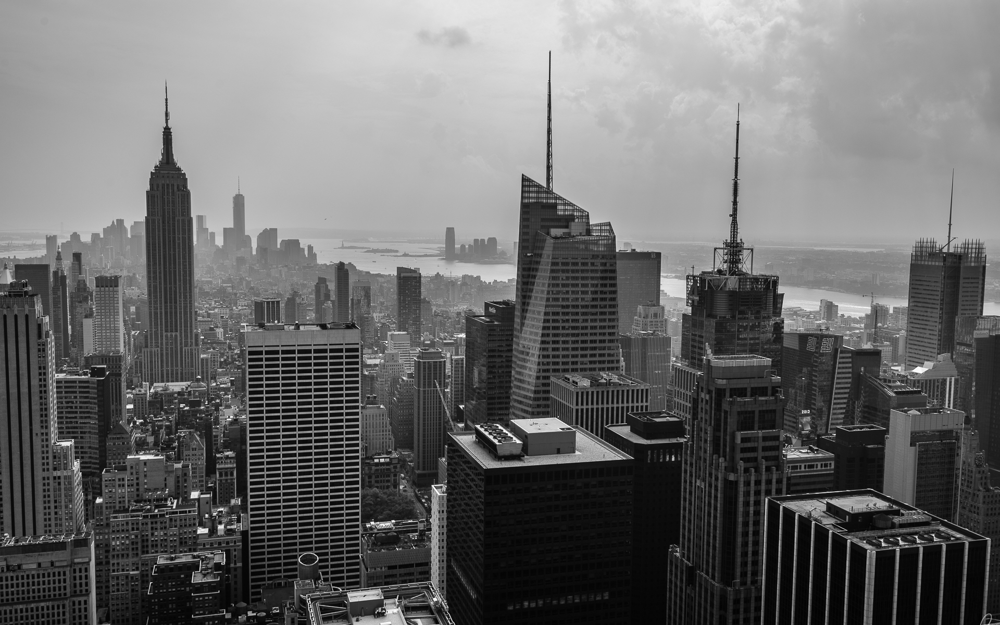

Ara Creative.
Redefining the professional standard of creativityARA design didirikan pada tahun 2014 dan merupakan platform untuk inovasi dan kreativitas. ARA design mengkhususkan pada desain komersial dan korporat seperti kantor, lembaga serta perorangan. Selain itu kami juga melayani kebutuhan dibidang advertising seperti identitas perusahaan, promosi dan publikasi. Dengan berbasis online dan mengutamakan kecepatan serta kualitas guna memberikan layanan yang terbaik demi kepuasan pelanggan tanpa harus datang ke lokasi.
ARAデザインは2014年に設立され、革新と創造のプラットフォームです。 ARAの設計は、オフィス、機関、個人などの商業的および企業的設計を専門としています。 さらに、私たちは、企業のアイデンティティ、プロモーション、出版物などの広告分野のニーズにも対応しています。 オンラインベースで、スピードと品質に優先順位を付けて、場所に来ることなく顧客満足のために最高のサービスを提供します。
Design can be art. Design can be aesthetics. Design is so simple, that's why it is so complicated.
